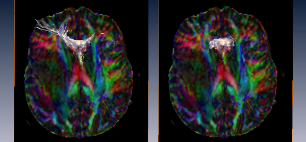

Fiber tracking performed to check the correctness of the gradient directions. The image on the left panel shows fibers correctly curving up in the frontal part of the brain, while in the image on the right panel they do not reach out to the forebrain area. The right image has been created by deliberately inverting the y-component of all gradient directions. While the DEC image of both tensors is identical the resulting putative fiber tracts can be incorrect.